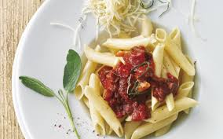

Penne sauce à la sauge

Une recette simple et facile pour épater les filles
Ingrédients
- un paquet de pâte, tu en as forcemment
- de la sauce tomate
- des lardons en veux-tu-en-voilà
- un fond de jaja blanc, un bon verre
- de la sauge, indispensable
- crème fraîche, fromage, pas obligé mais si il t'en reste pourquoi pas
- sel et poivre, évidemment
Etapes
- Cuire les lardons dans une poêle
- Quand ils sont cuits, ajouter la sauce tomate le jaja et la sauce
- Laisser mijoter à feu doux pendant 10-15 mn, pour que l'alcool s'évapore
- Assaisonner
- Pendant ce temps, faire cuire les pâtes (je vais pas expliquer quand même)
- Option: quand la sauce est prête y ajouter de la crème fraîche
- Profiter
Home